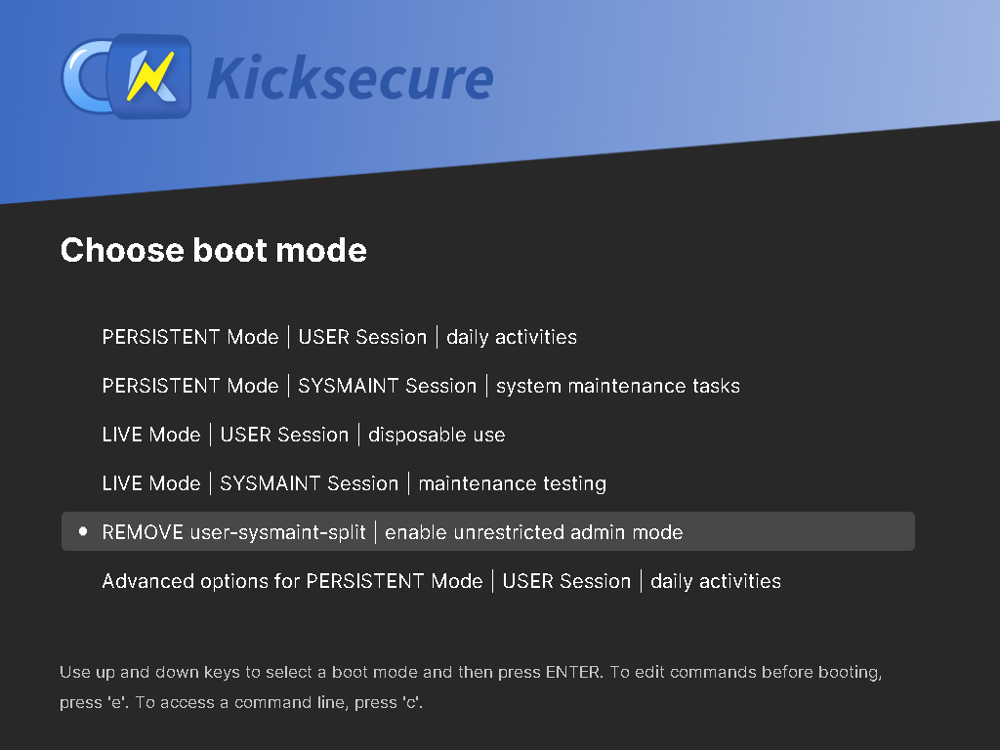

We believe security software like Kicksecure needs to remain Open Source and independent. Would you help sustain and grow the project? Learn more about our 14 year success story and maybe DONATE!
sysmaintDocumentationLogin
spoofingPrevious page:
sysmaintIndex page:
DocumentationNext page: Login
spoofing
Unrestricted Admin Mode
- Default Passwords
- Passwords
- Account Management
- Login
- Login Spoofing
- Safely Use Root Commands
sysmaintAccount- System Maintenance Panel
- Unrestricted Admin Mode
- Protection against Physical Attacks
- User Account Isolation (developers)
user-sysmaint-split (developers)- Polkit (formerly PolicyKit) /
pkexec - privleap /
leaprun

remove user-sysmaint-split boot menu entry
In Kicksecure, administrative ("root") access is restricted by default
for greater security. However, unrestricted admin mode can be
configured. Read more about unrestricted admin mode and how to
configure Kicksecure to suit your needs.
Overview
Unrestricted admin mode is, in some regards, the
opposite of user-sysmaint-split. In unrestricted
admin mode, standard methods to perform tasks that require
administrative rights, such as sudo and
pkexec, are available for the Kicksecure default limited
account user.
Most other operating systems do not include
user-sysmaint-split by default, so they do not refer to
this as "unrestricted admin mode". In such systems, unrestricted admin
mode is implied. However, Kicksecure provides the flexibility to switch
between user-sysmaint-split and unrestricted admin mode
based on your needs.
Kicksecure LXQt and Kicksecure for Qubes includes user-sysmaint-split by default.
Uninstalling user-sysmaint-split and Enabling Unrestricted Admin Mode
Since user-sysmaint-split is installed by
default, unrestricted admin mode must be explicitly
enabled. This section documents how to disable
user-sysmaint-split and switch to unrestricted admin mode,
where the user account can use sudo.
Optional. Discouraged.
Warnings:
- Privilege escalation risk: Reverting to unrestricted admin mode increases the risk of privilege escalation attacks and may weaken system security.
- Avoid
aptremoval: It is discouraged to useaptto removeuser-sysmaint-split, to avoid meta package removal issues (problems that can occur when important packages are removed together; for elaboration, see Debian Packages). Instead, it is recommended to proceed as per the instructions below. - Later reinstallation: Uninstalling and later reinstalling
user-sysmaint-splitshould work (we did quite a bit of work to make it so that the package can be removed and reinstalled without breaking things, though we do not test this as much as we test other features). On a technical level, you can do this. - Security model broken: The security model is broken by
removing
user-sysmaint-split. That is, once you uninstalluser-sysmaint-split, if any malware affects theuseraccount, it can elevate to root, and at that point reinstallinguser-sysmaint-splitwill not make your system secure again. However, ifuser-sysmaint-splithad never been removed in the first place, then malware that attacked theuseraccount will have a much harder time elevating to root.
Platform specific. Select your platform.
Kicksecure
Select a method.
using boot menu
If the user-sysmaint-split package is installed by
default, the easiest way to remove it is by using the
REMOVE user-sysmaint-split | enable unrestricted admin mode
boot option on the GRUB screen.
1 Reboot the machine.
2
Select
REMOVE user-sysmaint-split | enable unrestricted admin mode
from the list of boot options.
Figure: Remove user-sysmaint-split
boot menu entry
3
Authenticate as necessary to log in as the sysmaint
account. You may have to provide a disk encryption passphrase and/or the
user password for the sysmaint account, if either or both
passwords are set.
4
Type the word yes into the dialog box confirming that you
really do want to uninstall user-sysmaint-split.
5
Click "OK". A terminal window will appear, showing the logs generated
while uninstalling user-sysmaint-split.
6
When the text
Command exited. You may close this window safely appears,
close the terminal window. The system will automatically reboot.
7 Done.
The process of removing user-sysmaint-split is now
complete.
using dummy-dependency
Alternatively, you can use dummy-dependency to remove the
user-sysmaint-split package while booted in
PERSISTENT Mode | SYSMAINT Session | system maintenance tasks
(a special startup mode used for system changes). [1]
sudo dummy-dependency --purge --yes user-sysmaint-split
Kicksecure for Qubes
1 Notice of alternative option.
Is it really necessary? Potential alternative: Qubes Root Console
2 Qubes version specific.
- Qubes R4.2: Open a Qubes Root Console.
- Qubes R4.3 and above: Ensure that the
kicksecure-18Template is booted inPERSISTENT Mode | SYSMAINT Session | system maintenance tasks(a special startup mode used for system changes).
3
Uninstall the user-sysmaint-split package using dummy-dependency.
Run:
sudo dummy-dependency --purge --yes user-sysmaint-split
4
Install qubes-core-agent-passwordless-root to allow the
user account to elevate to root.
sudo apt install qubes-core-agent-passwordless-root
5 Shut down the Template.
6 Reboot any AppVMs that are based on the Template.
7 Done.
The process of removing user-sysmaint-split is now
complete.
Impact of unrestricted admin mode
Uninstalling user-sysmaint-split removes the sysmaint
session-related GRUB boot menu
modifications and reverts back to a "normal" boot menu. Unrestricted
admin mode is now the default.
Security impact? This is hard to quantify. It is important to
understand that user-sysmaint-split is an additional
security feature, not a silver bullet.
The security concept of user versus administrative account isolation,
implemented by the user-sysmaint-split package, is a
standard feature on mainstream mobile operating systems such as Android
and iOS. These mobile operating systems limit the rights of the device
owner and reserve full administrative access for the device manufacturer
(OEM). The purpose of this, among other security aspects, is to enforce
mobile device restrictions, prioritizing the wishes
of OEMs and application developers over user preferences. See also the
General
Threats to User Freedom wiki chapter Administrative Rights.
user-sysmaint-split improves security in many contexts.
For example, if a user is using a dedicated virtual
machine (VM) in a session only for web browsing, then there is no
need for the default account user in that VM to ever gain
root rights.
However, in other contexts such as on servers or development
environments, user-sysmaint-split might offer little or no
additional security, or degrade usability to unproductive levels.
There have been times when user-sysmaint-split was
unavailable and nothing catastrophic occurred. At worst, this reduces
the security level to the same state as before
user-sysmaint-split had been introduced.
See also Rationale for Protecting the Root Account.
Optional Restrictions
After removal, the user can configure sudo and/or other
privilege escalation tools as usual.
Footnotes
- ↑ The
--purgeoption is optional and not required in this case when usingdummy-dependency, becauseuser-sysmaint-splithas been designed without configuration files in the/etcfolder. Instead,user-sysmaint-splituses symlinks, which are deleted upon removal. This design ensures that a standardapt remove user-sysmaint-splitwill not result in unexpected functionality, such as parts ofuser-sysmaint-split(e.g., boot menu entries) still being active.